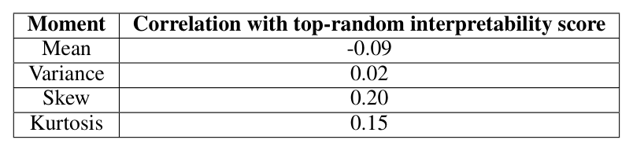

Interpretability correlated with activation moments

What is being correlated
Each row correlates one summary statistic of a dictionary feature's activation distribution — its mean, variance, skew, or kurtosis, computed over the token dataset — against that same feature's top-and-random Autointerpretability score (Interpretability-vs-kurtosis/skew correlation analysis). The population is every scored residual-stream feature pooled across all layers and five dictionary Dictionary expansion factor (R) ratios (0.5x to 8x overcomplete), not one layer or one dictionary size. A correlation coefficient here just measures how strongly two per-feature numbers co-vary across that population: a value like 0.20 is weak (it accounts for roughly 4% of the variance) and says nothing about any individual feature, and none of the four rows implies that manipulating a feature's moments would causally change its interpretability.
The four correlations
Mean correlates weakly negatively with interpretability (-0.09) and variance is essentially uncorrelated (0.02). Skew (0.20) and kurtosis (0.15) are the two positive, comparatively larger correlations in the table — features whose activations are more heavy-tailed and asymmetric tend to score as somewhat more interpretable. (The body text of §C.4 quotes slightly different figures for these two, 0.19 for skew and 0.24 for kurtosis, than the table itself; the values above are the table's own numbers.)
Why this matters for the baselines
The result is offered as an explanation for why Independent Component Analysis (ICA) is consistently the strongest non-dictionary-learning baseline in Figures 2, 8, 9, and 10: ICA explicitly searches for maximally non-Gaussian directions, closely related to maximizing kurtosis, and sparse dictionary learning can itself be reformulated as a search for directions of maximal L4 norm (L4-norm maximization (sparse dictionary search reformulation)). Under a central-limit-theorem argument, interference from many other active features should be roughly Gaussian, so a feature that stands out as unusually heavy-tailed is more likely to reflect a real, cleanly separated cause rather than noise (sparse-autoencoders, §"C.4 INTERPRETABILITY SCORES CORRELATE WITH KURTOSIS AND SKEW OF ACTIVATION", p. 16).